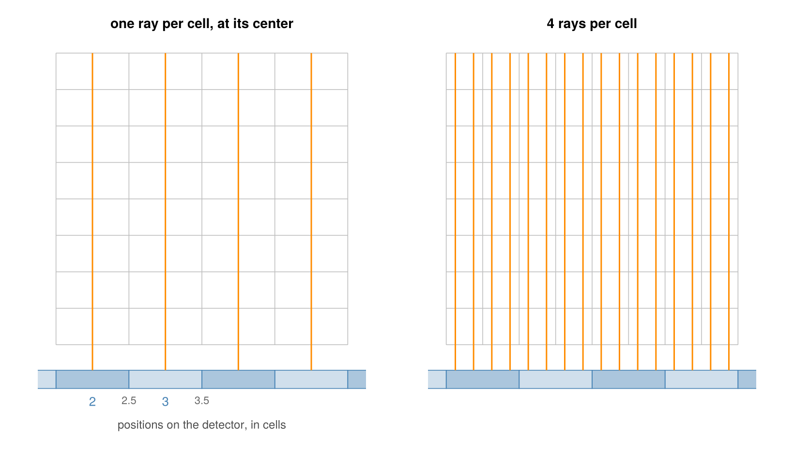
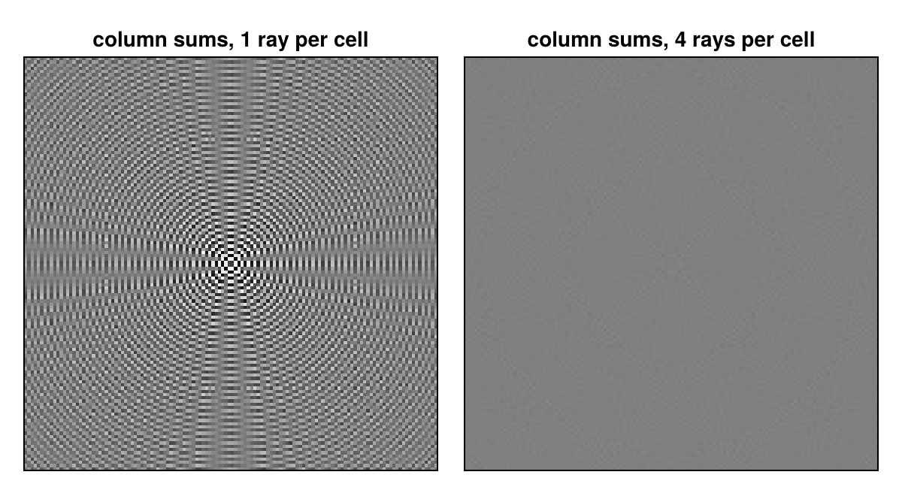
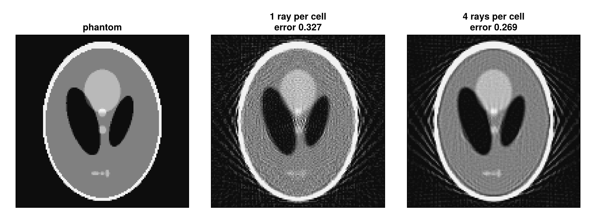
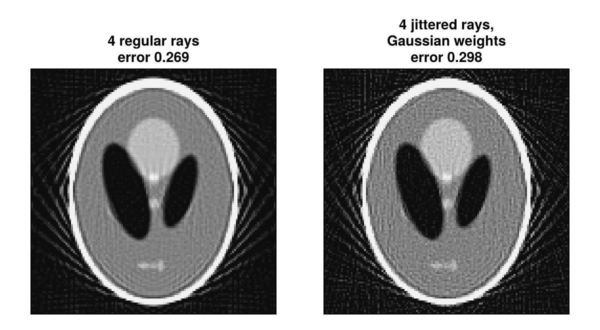

Use Several Rays per Cell
A detector cell measures the radiation that falls onto its whole area. The projectors trace one ray per cell, through its center. When the cells are large compared to the voxels, these rays miss voxels between them, and the reconstruction shows patterns that come from the sampling, not from the object. This guide shows the problem on a small example and how MultiRay traces several rays per cell instead. Several Rays per Cell explains how the rays are placed and weighted.
using CTOperators, ImagePhantoms, RegularizedLeastSquares, LinearOperatorCollection, CairoMakie
using ImageGeoms: axispoints_figure (generic function with 1 method)The example
A 2D Shepp-Logan phantom of 128 × 128 pixels and a parallel-beam scan with 180 views. The detector cells are 2 pixels wide:
n = 128
image = ImageGeom(; dims=(n, n), deltas=(1.0, 1.0))
x_true = Float32.(phantom(axis(image, 1), axis(image, 2), shepp_logan(SheppLoganToft(); fovs=(n, n)), 2))
geometry = parallel_beam(; angles=range(0, pi, 181)[1:180], nu=96, nv=1, du=2.0);The data should come from cells that average over their width, as a real detector does. They are simulated on a 4 times finer image with 16 rays per cell, so that the data do not come from any of the models compared below:
fine = ImageGeom(; dims=(4n, 4n), deltas=(0.25, 0.25))
x_fine = Float32.(phantom(axis(fine, 1), axis(fine, 2), shepp_logan(SheppLoganToft(); fovs=(n, n)), 2))
y = JosephProjector(fine, MultiRay(geometry, RegularPoints(16, 1))) * x_fine;The reconstructions use 40 CGNR iterations:
function reconstruct(op)
solver = createLinearSolver(CGNR, op; AHA=normalOperator(op), iterations=40)
reshape(solve!(solver, vec(y)), n, n)
end;One ray per cell
So far each data element was one ray, through the center of its cell. Positions on the detector are counted in cells: cell 2 has its center at position 2 and its edges at 1.5 and 2.5. With cells twice as wide as the pixels, the rays of a view pass through every other column of pixels (left):

Which pixels the rays miss changes from view to view, but not evenly. The column sums of the projector (colsums, the summed weights of all rays in every pixel) show it: with even coverage they would be smooth, here they vary by about 10 % in a fine pattern.
op = SiddonProjector(image, geometry)
x_center = reconstruct(op);Several rays per cell
MultiRay wraps the geometry and traces several rays per cell, here 4 at the centers of 4 subcells along u (right in the figure above). The projection of a cell is the mean of its rays' line integrals; the data keep their size.
op_multi = SiddonProjector(image, MultiRay(geometry, RegularPoints(4, 1)))
x_multi = reconstruct(op_multi);
Both images are shown in the window of ±20 % around the mean. With 4 rays per cell the column sums vary by less than 1 % inside the field of view. The reconstructions, in the color window 0 to 0.4 with the relative error $\|x - x_\text{true}\| / \|x_\text{true}\|$:

The model with several rays per cell is closer to what the cells measure, and the error drops from about 0.33 to 0.27. JosephProjector takes a MultiRay the same way. In 2D the rays stay in the image plane, so the points are spread along u only (RegularPoints(4, 1)); for a 3D image, RegularPoints(4) places 4 × 4 rays per cell.
Other placements and weights
Besides the regular points, a cell can be sampled at random positions, fixed by a seed:
JitteredPoints(4, 1; seed=1): each of the regular points moved to a random position within its subcell;RandomPoints(4; seed=1): 4 random points anywhere in the cell;Points(offsets): given positions, the same in every cell;
and the rays can be weighted, e.g. by a detector response that falls off towards the cell edges:
g = MultiRay(geometry, JitteredPoints(4, 1; seed=1); weights=GaussianWeights(0.4))
op_jittered = SiddonProjector(image, g)
x_jittered = reconstruct(op_jittered);
With data that are exact cell averages, as here, the regular points fit best: they are the midpoint rule for the average over the cell. The jittered points with Gaussian weights describe a different detector, one whose response falls off towards the cell edges, and the error is larger. Random positions break up the regular pattern of the rays; which placement and weights fit a scanner depends on its detector.
Cost and devices
- The time grows with the number of rays per cell: 4 rays take about 4 times as long; the placement and the weights cost nothing measurable (see the benchmarks). No extra memory is needed.
MultiRayworks on every device (storage=CuArrayetc.), and the random positions are the same on all of them, in the forward and the back projection, and forsubset(op, views).- Masks work as before: a masked data element skips all its rays.
This page was generated using Literate.jl.